Story Tellers
Clues
The key is knowing your audience. Seasoned gumshoes can sniff out a red herring from a mile away, so you gotta get creative with your misdirection. Plant false leads that shimmer with possibility, dead ends that feel tantalizingly close to the truth. But remember, there's a fine line between challenge and confusion. A good mystery is a puzzle, not an enigma. So, dole out the clues with a steady hand, whispers in the night, a cryptic inscription on a crumpled matchbook. Let your players connect the dots, their "Aha!" moments sweeter for the struggle. Because in the end, the thrill of the chase is half the fun. Just make sure they have enough moonlight to follow the trail, but not enough to see the whole picture at once. That's where the real magic happens, in the shadowy space between knowing and not knowing, where your players become detectives, not just pawns on your twisted game board. 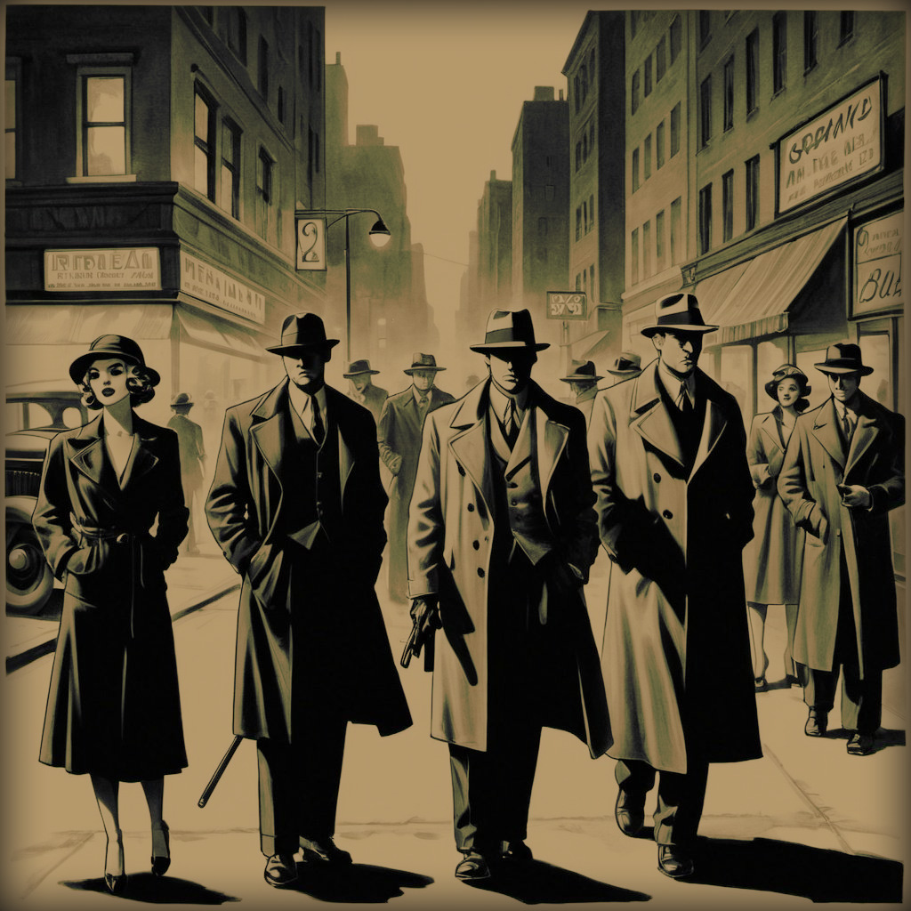
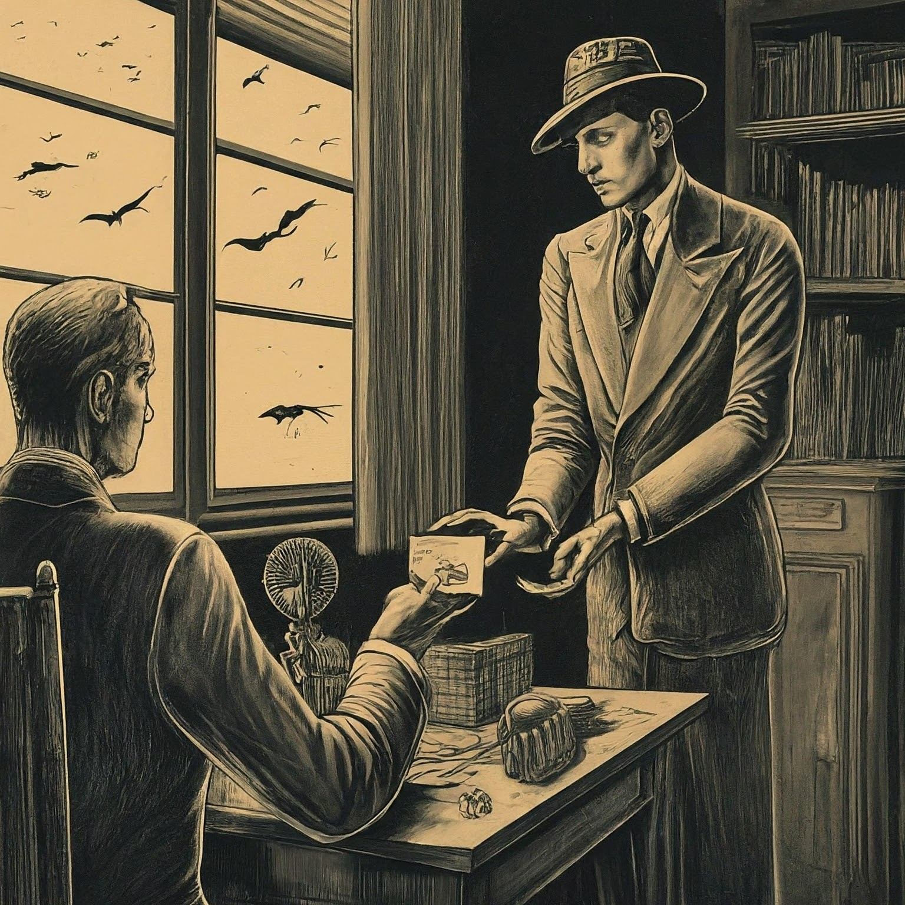
You will have to present clues for the players to follow. It's a tough
balance to find the right difficulty level for your clues, hidden
items, and red herrings. Nothing hurts more than your players
completely unable to solve or progess the game and it's very
frustating for them to have everything handed to them. Work with your
players to find the right balance. Every Investigation gives the
players a Clue Token. After collecting 4 Tokens the players can cash
them in to get a piece of the bigger picture!
Discovering Clues is based on a Percentile 2 D10 or 1 D100 Roll +
Invenstigation Skill Bonus':
Unmissable Clue - 0 - 25%
Easy Clue - 26 - 50%
Moderate Clue - 51 - 75%
Hard Clue - 76 - 100%
Don't forget the Red Herring. Red Herrings are clues specifically
designed to point the player in the WRONG direction. They can be fun
and add a lot of depth to your story, but be careful not to overuse
them. They can be very frustrating for your players.
Follow the C.L.U.E.s!
- ☙ Challenging
- ☙ Limits
- ☙ Uncover
- ☙ Exictement
Make it a Challenge!
This ain't no kiddie's playground. The scenarios thrown at you will
twist your gut, leaving you questioning every shadow and
second-guessing every move. It'll take more than bravado and a lucky
break to crack these cases. You'll need to think like a chess
grandmaster, ten steps ahead, your crew working in sync like a
well-oiled gat. Remember, teamwork makes the dream work, and in Neon
City, dreams are what keep you alive. So, partner up, sharpen your
wits, and get ready to earn your stripes.
Because in this town, only the toughest, smartest, and most
resourceful gumshoes walk away clean.
Set Limits!
Improvise, adapt, and overcome, partner. Crack a safe with a hairpin
and a pack of gum? Sure, why not. Bribe a crooked cop with a
well-placed punch and a whispered promise? Go for it. Just remember,
anything goes in Neon City, as long as it gets the job done. And if
you manage to pull off a feat of pure, unorthodox brilliance? Well,
let's just say there might be some unique rewards waiting for you.
Maybe a rare intel tip, a top-of-the-line weapon, or even a favor
from someone unexpected. So, ditch the rulebook, hone your street
smarts, and get ready to show Neon City what you're made of.
After all, in this town, the only limit is your imagination.
Uncover the Truth!
Forget spoon-fed answers, gumshoe. Neon City's secrets are buried
deep, hidden in the shadows and whispers of its inhabitants. You
won't find the truth neatly wrapped in a bow, waiting to be untied.
No, you gotta earn it. Pound the pavement, shake down every two-bit
crook and double-crossing dame you can find. Scour crime scenes for
clues, their whispers faint as a dying cigarette lighter in the
rain. Decipher cryptic messages, their meaning as tangled as a
dame's web of lies.
Because in Neon City, the truth is waiting to be found, but it might
just cost you more than you bargained for.
Keep it Exciting!
Forget static shootouts and cookie-cutter characters, gumshoe. Neon
City throws curveballs like a drunken sailor on a bender. Every
encounter is a gamble, a dance with danger that could erupt into a
heart-stopping shootout or a tense standoff drenched in sweat and
suspicion. The NPCs you meet ain't cardboard cutouts, either.
They've got their own agendas, their own secrets, and their own ways
of playing the game. We ain't promising happily-ever-afters in Neon
City, but we guarantee you one thing: an experience you won't
forget.
So, light your cigarette, pull your fedora low, and step into the
neon abyss. It's gonna be a hell of a night.
Combat
Combat can be the heart-pounding crescendo, the bullet-dodging ballet
under a hail of gunfire. But just like a jazz solo, too many bars and
it turns into a cacophony, too few and you lose the rhythm. Finding
the sweet spot for fisticuffs depends on your story, a delicate dance
between the players and the perils you throw their way.
Turn order starts with whoever initiates combat. It is then clockwise
around the table. When it gets to the Story Teller he will roll for
the NPC's.
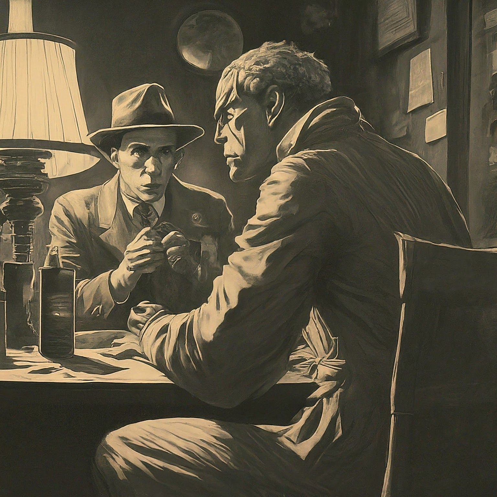
Attack & Defense Rolls
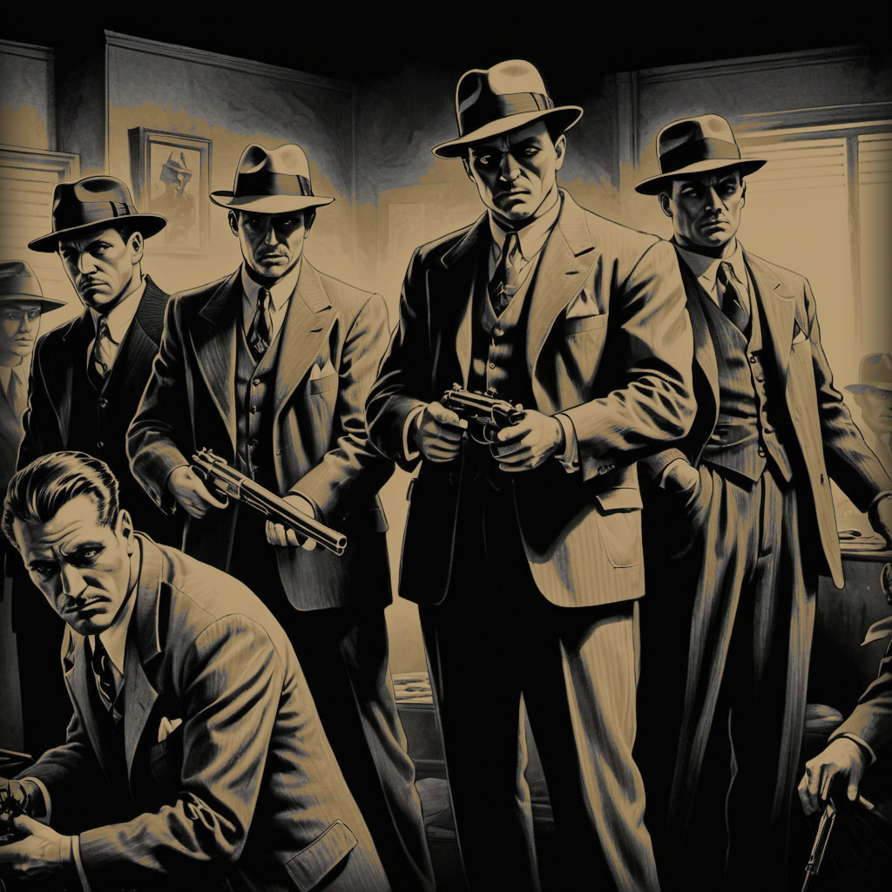
Combat is based on Attack & Defense Rolls.
The Attack Roll is based on the dice value of the Attack for player or
NPC.
The damage of the attack is based on the weapon.
The Attacker begins by rolling the Attack Dice. The Defender then
rolls the Defense Dice.
If the Attack Roll is higher than the Defense Roll, the attack is
successful and the damage is applied.
If the Defense Roll is higher than the Attack Roll, the attack is
blocked or dodged. Ties always go to defesnse.
Critical Hits / Defends
CRITICAL HITS/DEFENDS
There are a few exceptions to a succesful hit.
If the attacker rolls a 1, it is a critical miss and the attack not
only fails, but suffes a mishap, such as a misfiring gun or dropping
their knife. If the defender rolls the highest possible defense, it is
a critical block and the attack is not only blocked or dodged, but
they gain an attack of Opportunity.
If the player Attack is higher than the players, but the player rolls
Critical Dodge then it is still considered a miss!
ATTACK OF OPPORTUNITY
When a player gains an Attack of Opportunity they automatically get
the very next attack to the opponent who they critically dodged. After
the attack/defense rolls it returns to standard turn order.
Death and Injury
DEATH AND INJURY
Here a bad decision can leave you stiffer than a rigged poker deck.
Here is how Death and Injury work in Gumshoe:
If a player reaches 0 HP they are considered incapacitated.
If they reach -5 HP they are considered mortally wounded and will die
in 1D4 rounds, unless attended to.
If they reach -10 HP they are considered dead.
They can be healed with Medical Skill Checks or First Aid Kits.
Neon City ain't kind to the careless, chum. Take a wrong turn down a
dark alley or rub the wrong dame the wrong way, and you might just
find yourself pushing up daisies (or worse, feeding the fishes in the
harbor). But hey, that's the beauty of this game, right?
The Storyteller, yours truly, gets to decide if your story ends with a
whimper or a bang. Maybe a mysterious stranger with a shady past shows
up to offer a second chance (for a hefty price, of course). Or perhaps
it's time to introduce a new face to the neon jungle, my goal ain't to
send you packing – it's to tell a story where every choice has
consequences, some deadlier than others. So
Loot
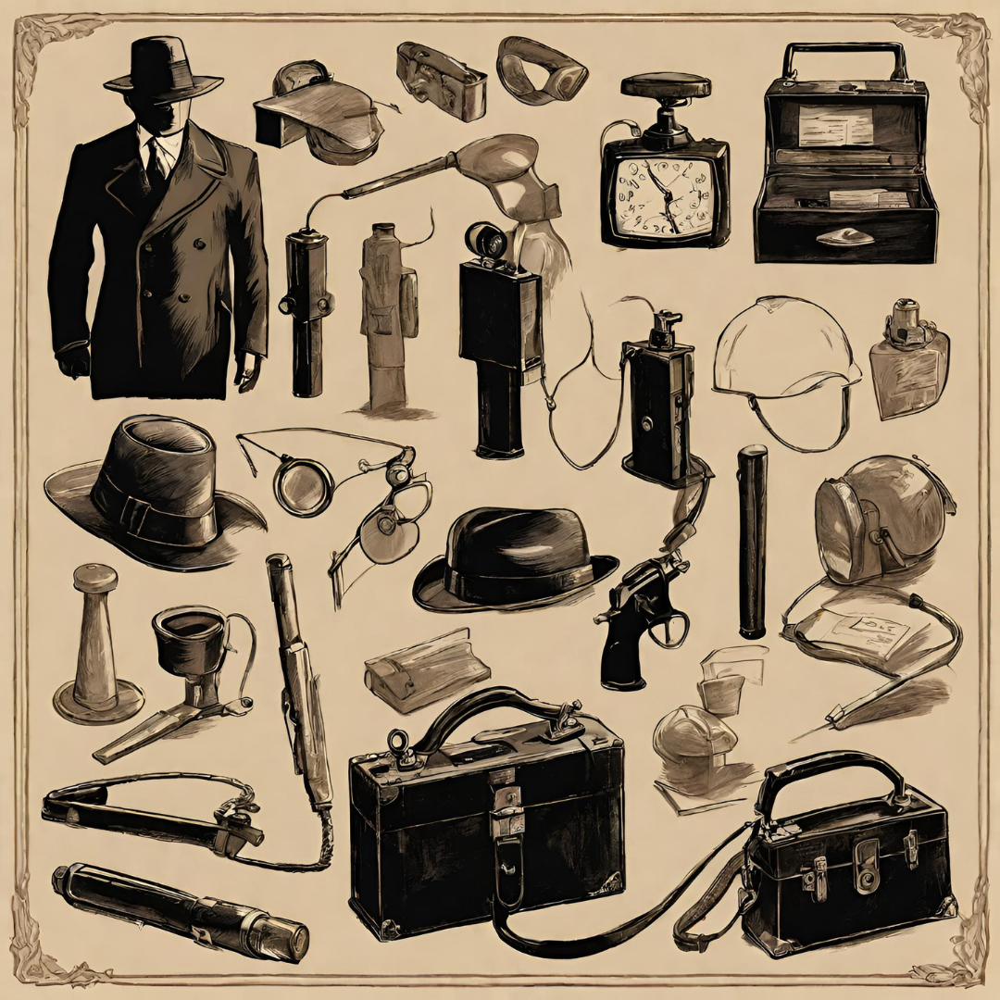
Every win brings rewards.
Just remember, the bigger the score, the bigger the risk. This town's
a two-way street.
Loot is earned by defeating foes, finding clues, and completing
Missions.
Loot Breaks down as follows:
-Combat
--- 10 Luck Points
--- XP (based on enemy difficulty)
--- 1D4 Clues Token(20 needed for free clue)
--- 2 D10 dollars
-Clues
--- 25 Luck Points
--- 100 XP
-Mission
--- 50 Luck Points
--- 250 XP
--- 2 D20 Dollars
Enemy Stat Template:
Attack - D4. Defense - D4.
XP - 10.
Attack - D6. Defense - D6.
XP - 20.
Attack - D8. Defense - D8.
XP - 30.
Attack - D10. Defense - D10.
XP - 40.
Attack - D12. Defense - D12.
XP - 50.
Attack - D12. Defense - D12.
XP - 70.
Attack - D20. Defense - D20.
XP - 90.
Crafting NPCs
Bringing NPCs to life is an art, not a formula. You want them to fit
seamlessly into the world, yet be intriguing enough to spark player
interaction.
Even the most meticulously crafted character might flop. Improvisation
is key!
Did your charming bartender fall flat? Swap them for a
gruff one with a hidden agenda.
Having a roster of
ready-made NPCs allows you to adapt on the fly and keep the story
flowing.
Don't forget to assign them stats based on the Enemy Example Template.
Key Items and specialized loot can also be dropped by specific NPCs to
keep the story cohesive and give your players that extra reward!
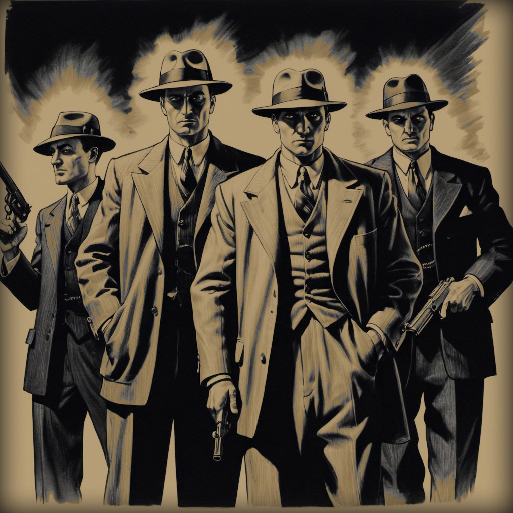
__NPC Example Traits:__
• Name Dropper: This fast-talking hustler peppers every conversation with the names of supposed high rollers and big shots, hoping to impress or intimidate.
• Nervous Twitch: This jittery fellow can't keep his hands still, constantly fiddling with tools or gadgets. His nervous energy is both endearing and slightly unsettling.
• Fortuneteller: This flamboyant fortune teller makes predictions that are hilariously wrong, but some have an uncanny knack of coming true.
• Conspiracy Theorist: This grizzled veteran with believes the government is controlled by aliens infiltrating the city. He peppers his conversations with nonsensical ramblings, but occasionally drops a nugget of truth amidst the madness.
Gameplay
Skills, Actions, and Points:
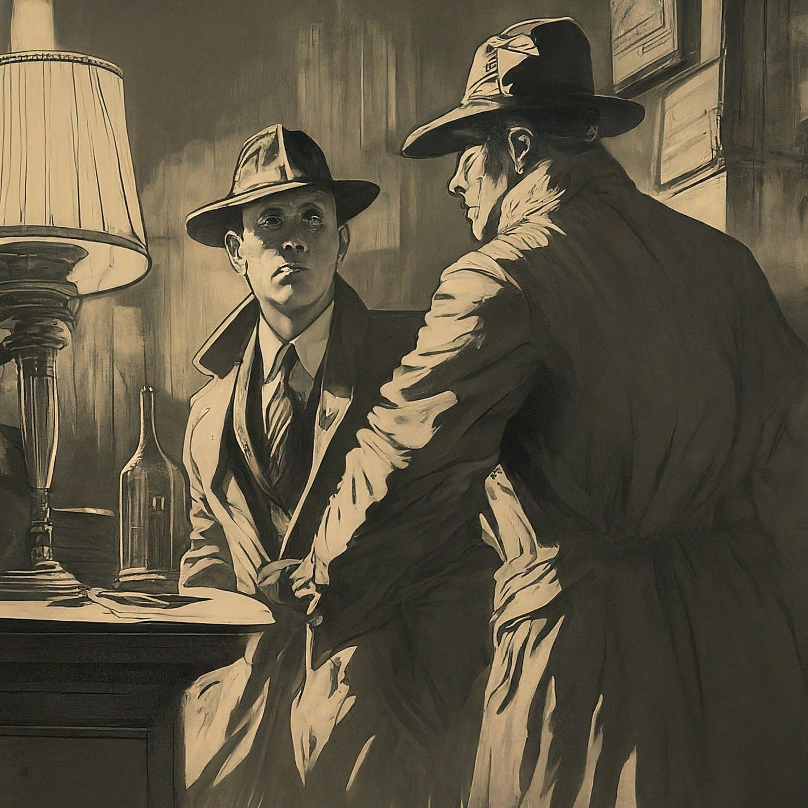
Gameplay is simple.
After the Character Creation the Story Teller sets the scene. Each
player then reacts to the scene. You've already seen how combat works,
but what about non-combat actions?
The player can react to the scene in a variety of ways. For instance
let's say they are in smokey Jazz Hall searching for Gangster. The
Gangster runs. They can:
-Command him to stop
-Persuade the Bouncer to help
-Give Chase
If they try to command him to stop they would roll a Intimidate Skill
Check and any Bonus' in Intimidation
If they try to persuade the Bouncer they would roll a Persuasion Skill
check and add any Bonus' in Persuasion.
If they give chase they would roll an Atheltics Skill check and add
any Bonus' in Athetlics.
Creative Actions
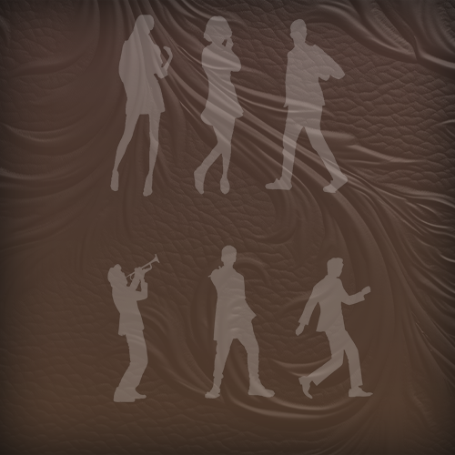
Creative actions can be handled in a variety of ways. Let's say the
player wants to shoot down a banner to trap the gangster instead of
the other examples given.
Instead of rolling a complex series of rolls for example:
-Attack Roll for Shot
-Spot Check for Banner
-Perception Check for Gangster and so on
You could simplifiy it by having the player roll a Percent Roll.
The difficulty value will be determined by Story Teller on a 1-100
scale.
1-10 Being very easy and 100 being nearly impossible.
So if you decide it's fairly difficult and assign a value of 75. Then
player would roll their Percent Dice (2D10 or 1D100) and any of their
Luck Points they wish to Apply.
If they succeed the banner falls and the gangster is trapped.
If they fail the banner doesn't fall and the gangster gets away.
It can be as simple as that!
Skills
In the grand carnival of roleplaying, your skills are the flashy
costumes that make your character stand out from the crowd. Just like
a seasoned grifter wouldn't be caught dead juggling bowling pins, you
gotta pick skills that fit your backstory like a well-worn fedora.
Here's the deal: you start with 9 shiny skill points to dish out
however you see fit. Maybe your character's a wisecracking detective
with a silver tongue and a knack for picking pockets. Pump those
points into "Persuasion" and "Sleight of Hand" and watch the suspects
spill their guts faster than a two-dollar bottle of bootleg hooch.
Skill Checks are performed by using a D20 and adding the appropriate
Skill Bonus. The Story Teller will set the difficulty of the check.
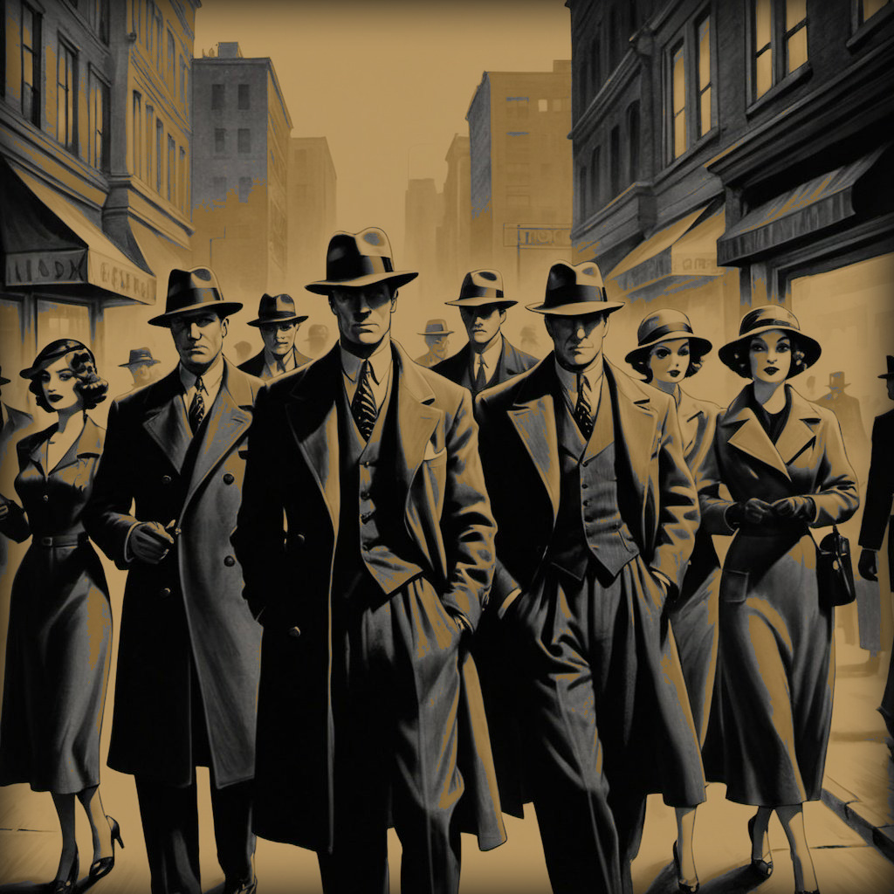
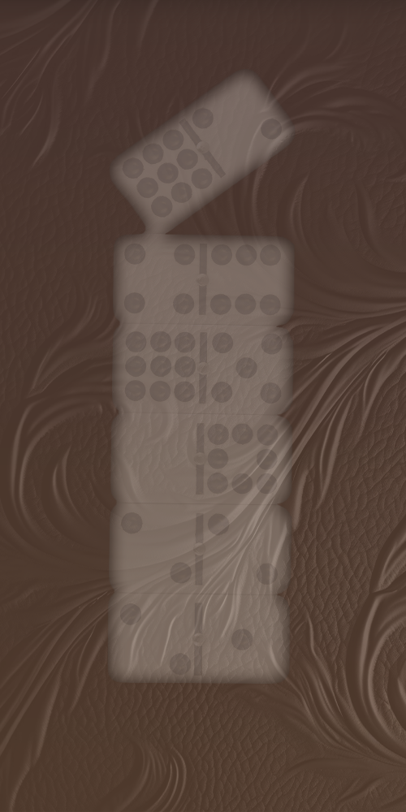
*Max of 5 in each skill
-Athletics - For physical or acrobat manuevars
-Intimidation - Intimitdate Target
-Persuasion - Persuade Target
-Sleight of Hand - Steal Item / Hide Item
-Perception - Your abilit to notice things
-Investigation - Your ability to find clues
-Medical - Your ability to heal wounds
-Driving - Your ability to pull off stunts
-Deception - Your ability to lie
-Diplomacy - Your ability to negotiate
-Forgery - Your ability to create fake documents
-Peformance - Your ability to entertain
-Seduction - Your ability to seduce
Spending Luck and XP
Luck Points are a valuable resource. They can be spent to add to a
percent roll or to reroll a roll. Players accummulate luck roll in the
combat Section, under Loot
-Percent Roll - You can spend points and them to your luck roll. Every
10 Luck Points apply a +1 to Percent Roll.
- A player can spend 100 Luck points to re-roll an unfavorable roll.
XP is earned by completing missions, defeating foes, and finding
clues. It can be spent to increase skills or HP.
- 500 XP can be spent to increase a skill by 1 point.
- 2000 XP can be spent to increase HP by 5 points.
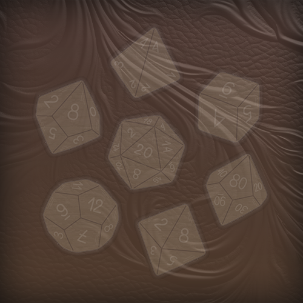
Neon City and
The World of Gumshoe:
The Neon City Police:
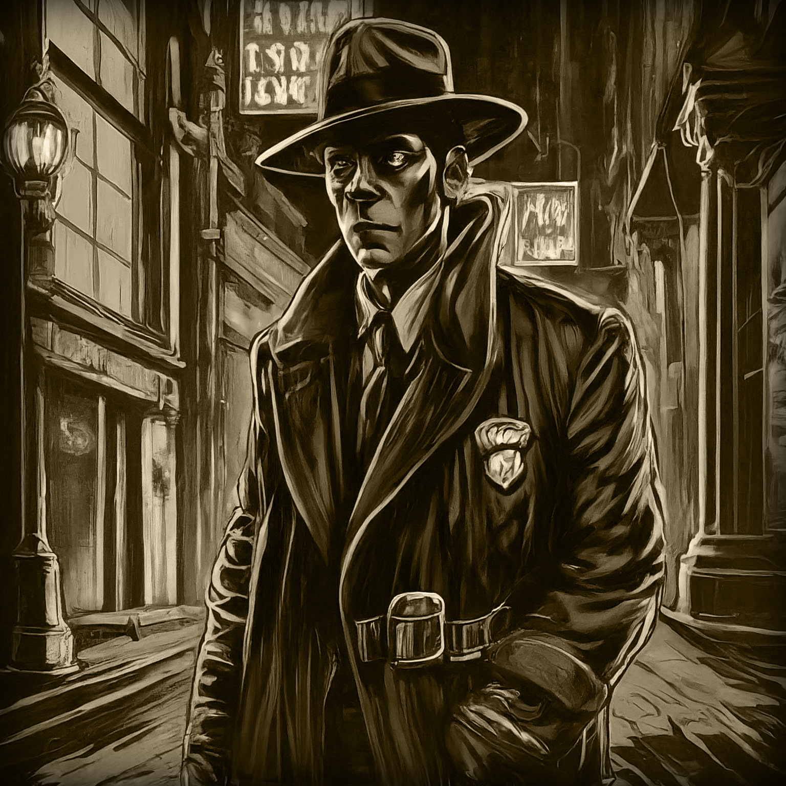 Entering the Neon City Police Station was like stepping into a film noir come to life. It was a place where hope flickered like a dying ember, and the only sure thing was the ever-present stain of corruption. The badges weren't shiny symbols of justice; they were tarnished tokens of a twisted power dynamic. The cops here weren't your knight-in-shining-armor heroes, they were more like walking question marks with a price tag. Here's a how a savvy player, might use or manipulate the laws of Neon City:
The Penrose Division:
The Bureau boys with their fancy new Penrose Division weren't playing by the Queensbury rules. These spooks, with their flashy triangular badges and nervous habits – muttering to their badges like cornered rats – were always a step behind me, and somehowe a step ahead. They lurked in the shadows like phantoms, their presence a cold wind chilling the back of your neck right when you thought you were hot on the trail.They sure as hell weren't sharing their secrets, and judging by the shifty way they operated, those secrets were darker than a moonless night in an alley. One thing for sure you better do your best to stay out of their crosshairs, or might be taking a long walk off a short pier. But then again, maybe a player could use them to their advantage. After all, the enemy of my enemy is my friend, right? 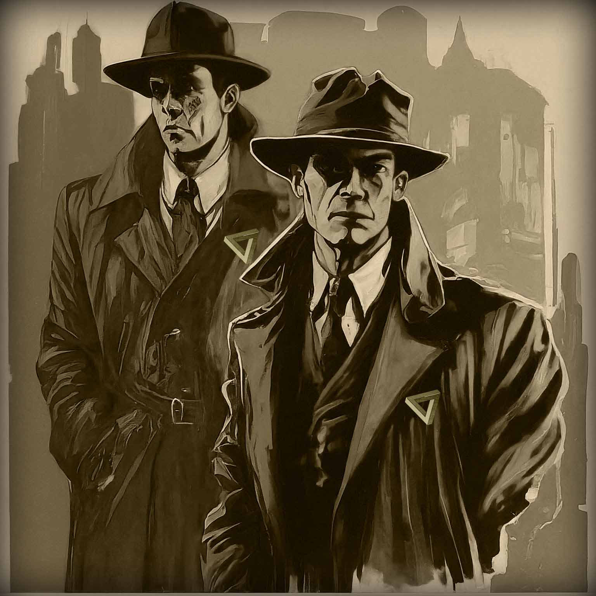
The Gangs:
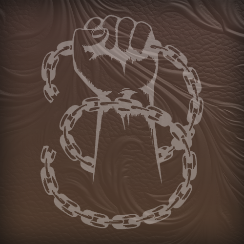
The stench of stale sweat and fear clung to the abandoned warehouse
like a second skin. Here, bathed in the flickering glow of flickering
fluorescent bulbs, the "Rusty Spikes" surveyed their latest haul – a
mountain of stolen goods ripped off from a shipment meant for a rival
casino. The Rusty Spikes were the embodiment of Neon City's
underbelly, a gang as cruel and ruthless as a broken bottle in a dark
alley.
Their territory stretched from the grimy docks to the seediest bars, a
swathe of Neon City stained with violence and despair. They extorted
shopkeepers, ran protection rackets, and dealt in anything from
bootleg booze to stolen pharmaceuticals. Their methods were as
efficient as they were vicious – a broken kneecap here, a slashed face
there, a message scrawled in blood on a rival's door.
*
*
Skylark Tower:
Skylark Tower sliced through the Neon City skyline like a gleaming chrome dagger. A monument to the Art Deco age, it was a testament to both automotive innovation and unbridled ambition. Clad in polished turquoise ceramic tiles that shimmered like a mermaid's scales under the neon glow, the tower rose in a series of stepped setbacks, each adorned with chrome detailing that gleamed like a thousand silver coins stacked against the inky night sky. Skylark Tower wasn't just a building; it was a beacon, a symbol of Neon City's relentless forward motion, a glittering promise on the chrome horizon. 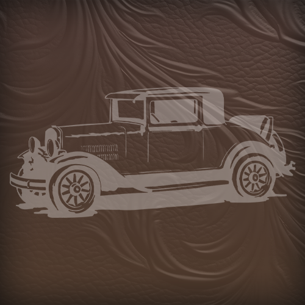
*
The Casino Block:
The Block, a pulsating heart of artificial light and whispered
secrets, housed Neon City's crown jewels – the casinos. Here, towering
chrome and glass structures, each more opulent than the last, jostled
for dominance, their neon signs a cacophony of clashing colors vying
for your attention.
Step through the velvet ropes and enter a world where time melts away
like a cheap dice roll. Marble floors gleamed under the harsh glare of
chandeliers, reflecting the desperation and hope flickering in the
eyes of the patrons. Croupiers, men and women with faces as impassive
as poker chips, presided over tables draped in green felt, their
practiced patter a constant white noise against the clinking of coins
and the whirring of roulette wheels.
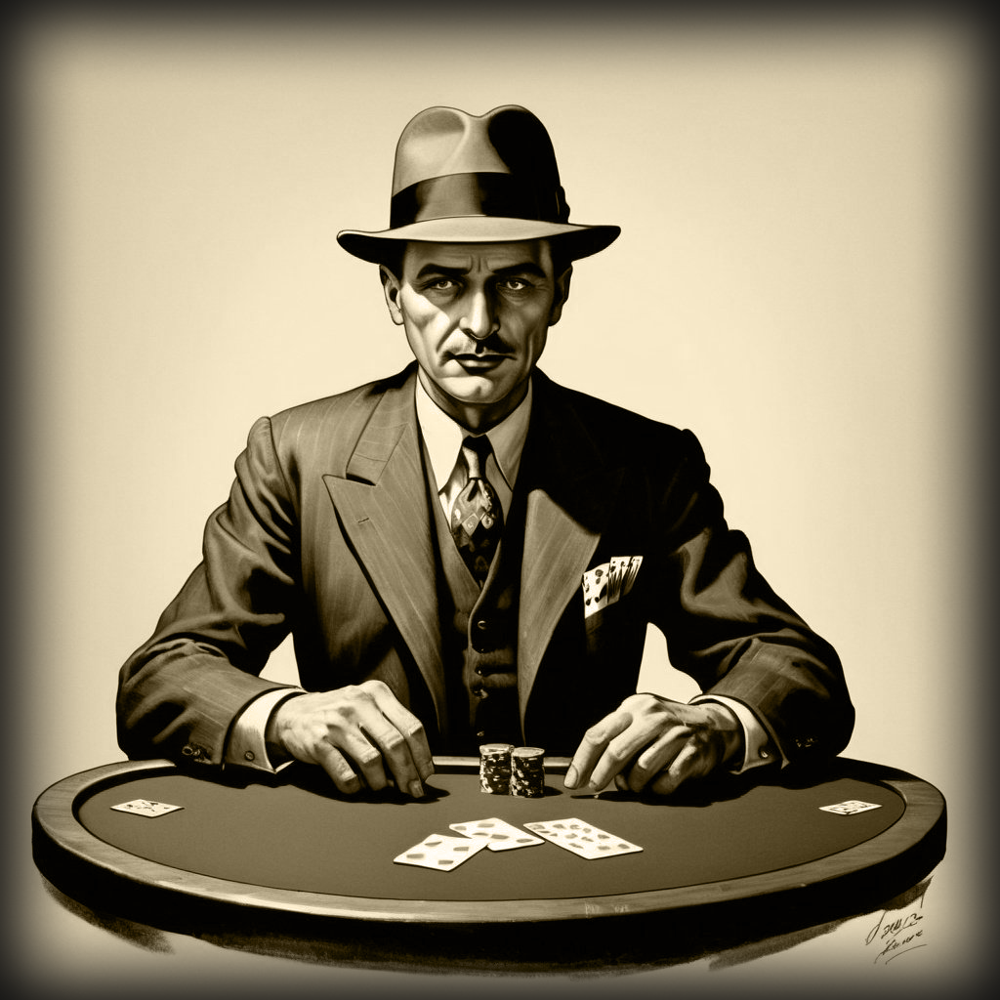
Gambling Can be handled many different ways. Here some approaches I
have taken:
-Luck Rolls. Base each game, hand, or spin on a Luck roll.
-Casino Game generators. You can use online resources like Casino game
generators or online card games to simulate the gambling experience.
-Real Games. You can actually get a deck of cards out, some dice, or
even a roulette wheel. The only limit is your imagination
The Rusty Saxophone:
The Rusty Saxophone
The club itself was a relic, a two-story building with peeling paint
and a rickety fire escape clinging to its side like a forgotten dream.
Inside, the air hung thick with the ghosts of past performances – the
lingering scent of stale beer, cigarette smoke, and the faintest echo
of a saxophones's wail. Dimly lit by flickering bulbs and mismatched
lampshades, the walls were adorned with faded photographs of long-gone
jazz legends, their faces etched with the bittersweet beauty of a life
lived on the edge of a melody.
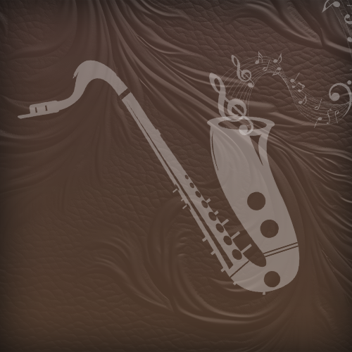
 Occupying the dimly lit stage of the Rusty Trombone most nights
was "Smoky" Joe Miller's Ragtime Renegades, a ragtag band of
veterans who poured their hearts and struggles into every note.The
band's namesake, Joe was a wiry man with a perpetually ash-stained
face and a voice as raspy as a rusty hinge. He'd seen it all, and
made it into song!
Occupying the dimly lit stage of the Rusty Trombone most nights
was "Smoky" Joe Miller's Ragtime Renegades, a ragtag band of
veterans who poured their hearts and struggles into every note.The
band's namesake, Joe was a wiry man with a perpetually ash-stained
face and a voice as raspy as a rusty hinge. He'd seen it all, and
made it into song!
The Harbor:
 Here, the neon lights that bled into the night sky above met their
watery demise, staining the oily surface with a fractured reflection
of the city's decadence. Rusted cranes, like skeletal giants, reached
for the polluted sky, while grimy freighters belched plumes of black
smoke, a stark counterpoint to the dazzling skyline. This was a place
where the salt-laced breeze carried the tang of adventure, the clang
of industry, where the whispers of a thousand shady deals struck in
the shadows of towering cargo containers and the unsettling suspicion
that many an unlucky soul had found a permanent resting place beneath
the harbor's oily sheen.
Here, the neon lights that bled into the night sky above met their
watery demise, staining the oily surface with a fractured reflection
of the city's decadence. Rusted cranes, like skeletal giants, reached
for the polluted sky, while grimy freighters belched plumes of black
smoke, a stark counterpoint to the dazzling skyline. This was a place
where the salt-laced breeze carried the tang of adventure, the clang
of industry, where the whispers of a thousand shady deals struck in
the shadows of towering cargo containers and the unsettling suspicion
that many an unlucky soul had found a permanent resting place beneath
the harbor's oily sheen.
*
Neon City's harbor pulsed with a life all its own. Here, the rhythmic clang of industry mingled with the salty tang of the sea, a stark contrast to the neon symphony above. Shady deals went down under the watchful gaze of rusted cranes, whispers carried on the ever-present breeze. Players with a knack for thievery could mingle with dockworkers, their pockets potentially lined with pilfered goods Captain Kim might "accidentally" overlook if the price was right. Need a place to lay low after a messy heist? The rickety taverns lining the docks offered a temporary haven, a place to disappear into the anonymity of the harbor's underbelly for a price, of course. But remember, in Neon City's harbor, every shadow hides a secret, and every corner whispers a story. Just be careful which ones you choose to listen to. 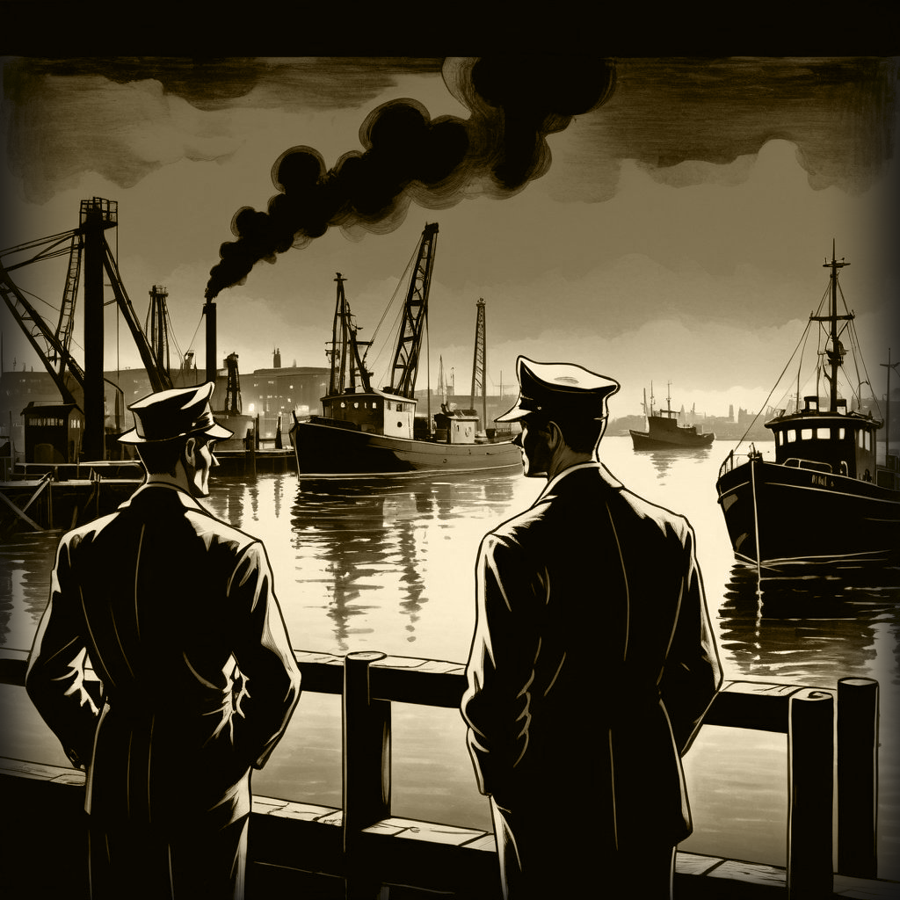
The Starlite Motel:
Unlike its flashy cousins downtown, the Starlite wasn't a beacon of
dazzling lights. Its faded neon sign, a lonely astronaut holding a
flickering star, cast an ethereal glow on the peeling turquoise paint.
Inside, the air hung thick with the scent of stale coffee and
something that vaguely resembled disinfectant.
Run by the smiling man Handsom Bob and his constant companion, his
daughter, Adriana. Barely a pre-teen, she possessed a wisdom beyond
her years. Her dark eyes held a spark of defiance, a reminder of the
struggles they'd faced together. She kept the Starlite running with a
quiet efficiency.
The Starlite Motel wasn't glamorous, but it offered a flicker of
solace, shimmering faintly like the lonely star on the motel's faded
sign.
Out of this World Ending!:
So, your players have cracked the case, tangled with the Rusty Spikes,
and maybe even gotten their hands on a souped-up Skylark. Here's where
you crank the neon to eleven and unleash the real mind-blower.
Maybe that pulsating billboard wasn't advertising a new brand of
cigarettes, but a message from a visitor from outerspace. The
possibilities are as limitless as the neon sky.
Leave your players blinking, bewildered, and maybe even a little
heartbroken (in the best way possible) when they finally hang up their
Fedoras for the long night!
Downloads
Starter Adventure
Download
Rain slicked the chrome of my trench coat, the neon glow of Neon City
bleeding into the puddles like spilled dreams. This dame, long gone
and presumed dead, had resurfaced on a flimsy postcard. Her message, a
cryptic plea for help, tugged at the ghost of what we once had. Neon
City. A rocky hideaway where pleasure and peril intertwined like
vipers in a heat haze. I wasn't built for sunshine and sand, my skills
honed in the shadows of steel canyons. But a dame in distress? That's
a case I couldn't walk away from.

Future Adventures
 The smog hung heavy over Tinseltown, a sickly yellow halo above the
hazy dreamscape. Here, ambition dripped like sweat under the merciless
California sun, where fortunes were made and shattered faster than a
celluloid kiss. Dames with million-dollar smiles hawked their wares,
and chisel-jawed fellas with steely gazes dreamt of the silver screen.
But beneath the glitz, a darkness festered. Whispers slithered through
back alleys, tales of things unnatural, of creatures from beyond the
frame. Hollywoodland, they called it. More like Hollyweirdland, a
place where the scripts got stranger than anything dreamed up by a
drunken screenwriter. You, chum, are the only shamus with the guts
(and the bottle) to wade through this celluloid nightmare.
The smog hung heavy over Tinseltown, a sickly yellow halo above the
hazy dreamscape. Here, ambition dripped like sweat under the merciless
California sun, where fortunes were made and shattered faster than a
celluloid kiss. Dames with million-dollar smiles hawked their wares,
and chisel-jawed fellas with steely gazes dreamt of the silver screen.
But beneath the glitz, a darkness festered. Whispers slithered through
back alleys, tales of things unnatural, of creatures from beyond the
frame. Hollywoodland, they called it. More like Hollyweirdland, a
place where the scripts got stranger than anything dreamed up by a
drunken screenwriter. You, chum, are the only shamus with the guts
(and the bottle) to wade through this celluloid nightmare.
The Amazon humidity hung heavy in Rio, a suffocating cloak over the
vibrant chaos. Christ the Redeemer, its skeletal form reaching towards
the hazy sky, offered no solace. Here, in 1936 Rio, the samba pulsed
with a darker rhythm. I, a weary gumshoe used to the grit of New York
City, had arrived for some sun-drenched R&R. But past sins are like
stray bullets, they have a way of finding you, even in paradise. A
face from a forgotten case materialized across the casino floor –
Frankie "The Fox" Moretti, a hood I put away back in '32. He shouldn't
be here, breathing, radiating barely contained rage. Looks like my Rio
vacation just took a sharp turn into a labyrinth of showgirls with
deadly secrets, a murder threatening to ignite a war, and Frankie "The
Fox" Moretti thirsting for revenge as cold as a Rio night. This dame
in distress wouldn't be wearing a swimsuit, but a shroud.

 Moscow, a frozen tomb bathed in perpetual twilight. Not exactly your
typical tourist trap. You, a gumshoe with a nose for trouble and a
taste for cheap vodka, were partnered with Nika Arovka, a Soviet
ambassador with a smile too sharp and eyes like glacial ice. Whispers
of strange men in uniforms and ancient alien devices with world-ending
power sent you both hurtling through this frozen hell. Tracked once
again by the Mysterious Penrose Division: you, a down-on-your-luck
detective, and a femme fatale with buried secrets, were all that stood
between oblivion and a world cracked open like a rotten egg.
Moscow, a frozen tomb bathed in perpetual twilight. Not exactly your
typical tourist trap. You, a gumshoe with a nose for trouble and a
taste for cheap vodka, were partnered with Nika Arovka, a Soviet
ambassador with a smile too sharp and eyes like glacial ice. Whispers
of strange men in uniforms and ancient alien devices with world-ending
power sent you both hurtling through this frozen hell. Tracked once
again by the Mysterious Penrose Division: you, a down-on-your-luck
detective, and a femme fatale with buried secrets, were all that stood
between oblivion and a world cracked open like a rotten egg.
The last case went sideways faster than a greased getaway car. Now,
you find yourself yanked from the familiar grime and grit and
deposited in... well, who even knows? The Penrose Division, that's
what they call themselves. Seems this rabbit hole runs deeper than a
bootleg speakeasy. Multiverse travel, alternate realities, alien
threats, the whole kit and kaboodle. All under the steely gaze of your
new boss, April Sunday. A dame with a name that wouldn't be out of
place in a bygone era, stuck in a world that makes yesterday's case
look like a walk in the park. One thing's for sure, shamus: the gloves
are off. Crack the case with the help of your new partner Nika Arovak,
stop whatever's bleeding through the seams of reality, and maybe, just
maybe, impress Ms. Sunday enough to learn the mystery that started
this whole adventure!